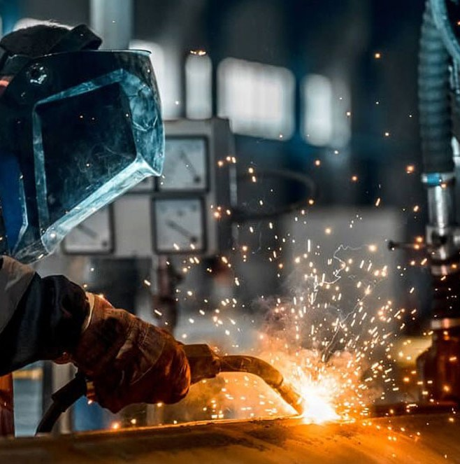
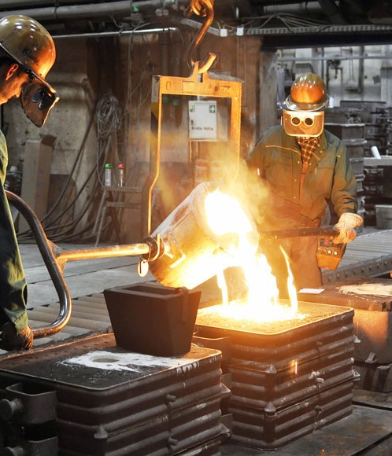
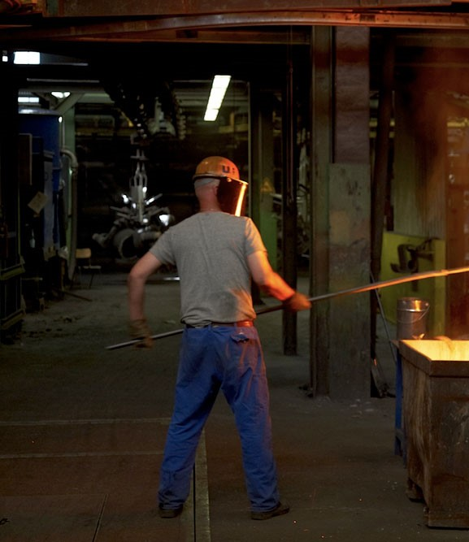
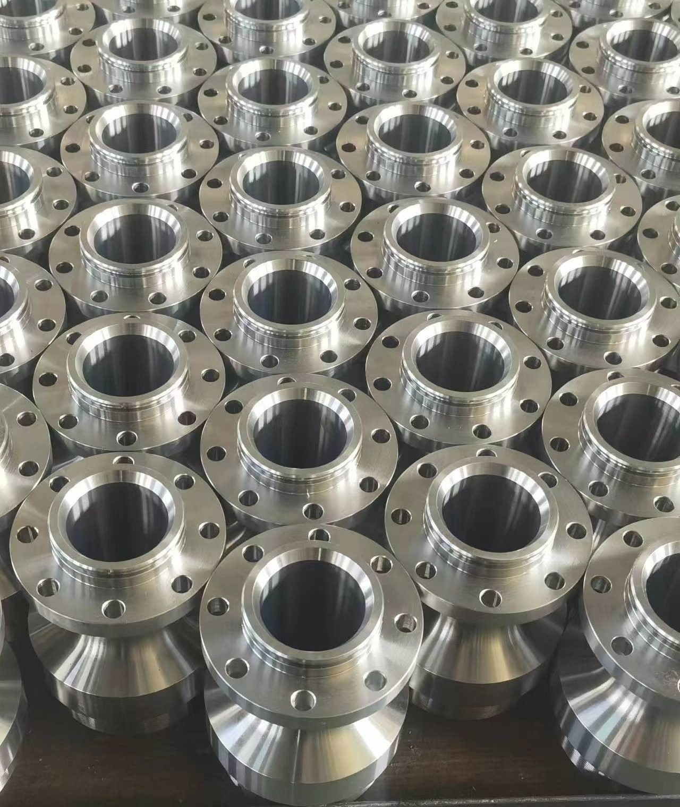

About our Investment Casting
Our Factory's Top Notch Capabilities
- Wuxi. Inheriting China's first batch of electric submersible pump impeller design, casting tradition, combined with modern processing technology, Dillon casting has developed into a modern enterprise integrating casting design, mold opening, casting, processing, and one, covering an area of 5000 square meters, water, and self-contained electricity system, the factory has a mold making workshop, shell workshop, casting workshop, shot peening workshop, machining workshop, assembly workshop, etc.,
- With four wax-making machines, two wax stirring machines, two sanding machines, two floating sand machines, two shell vibrating machines, four shot blasting machines, 12 CNC machine tools, six sets of standard machine tools, three sets of roasting furnaces, two sets of intermediate frequency furnaces, etc.,
- The company has six departments: the sales department, financial department, production department, quality inspection department, etc., with 60 employees. Main electric submersible pump accessories (impeller, Diffuser, Cable protectors, Pothead, casing rigid centralizers, casting non-standard customized products. Castings product specifications cover 10mm-600mm size, 0.1-70 kg single products, annual output of castings 600 tons, and annual production of 100,000 Impeller and diffusers, adhering to the business policy of meeting customer needs with high-quality products to solve customer problems, the company's products are exported to the United States, Dubai, Singapore, Russia, and other countries and regions through electric submersible pump complete sets of manufacturers, and the market alarming feedback rate for many years is zero.

Dedicated leader in the investment casting
- Wuxi Dilong Casting Co., Ltd is a dedicated leader in the investment casting investment casting industry. We are located in Wuxi Dilong Casting Co., Ltd and serve many industries. Our company boasts over 40 years of experience, and our tooling shop with state-of-the-art machines. Our complete investment casting capabilities produce top-quality results to meet each customer's unique and specific needs. From start to finish, our management team and skilled engineers work to provide the best service possible while still controlling the cost of the products.
Our products are impellers and diffusers used for many years by big Pump Centrifugal pump industries around the globe.
- We also have a stock point in the heart of the Middle East for easy transportation and time-saving.
- Our dependable company produces top-quality results with tight tolerances and quick turnarounds. We serve a variety of industries, including the pumps, conveyor, chemical, electrical, railroad, marine, electronic, , machine tool, and mixing equipment industries.

Explanation of our facility
- Wuxi Dilong Casting Co., Ltd recently expanded our facility with additional machines to offer value-added operations and increased operation abilities and capacities. Our facility includes two quality die makers and four CNC mills. We are now capable of machining, heat treating, and surface finishing. We also offer x-ray of castings, liquid penetrant testing, tensile testing, and more.

Products Manufaturing on Larger Scale
- Wuxi Dilong Casting Co., Ltd . can manufacture products in quantities from 1 to 1,000,000, and products can range in weight from less than an ounce to 50 pounds. Our skilled engineers are at the customer's disposal, prioritizing service and producing quality products to meet customers' budgets and timeframes.
- Our engineers work from CAD files in many formats and produce a 3D model; the CNC mills then make the tooling for each unique casting.
- Castings are made from alloys, including low carbon, alloy steels, PH stainless, cobalt base, tool steels, bronze, aluminum, and more. Call or visit our website today for more information!
